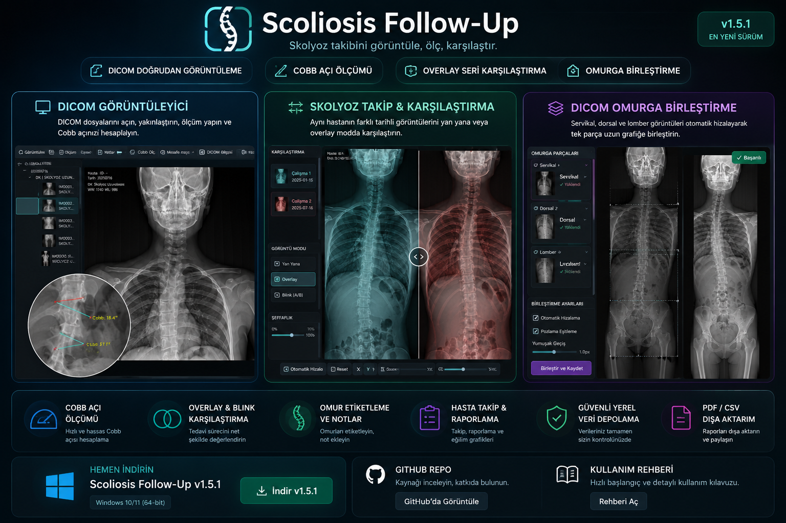
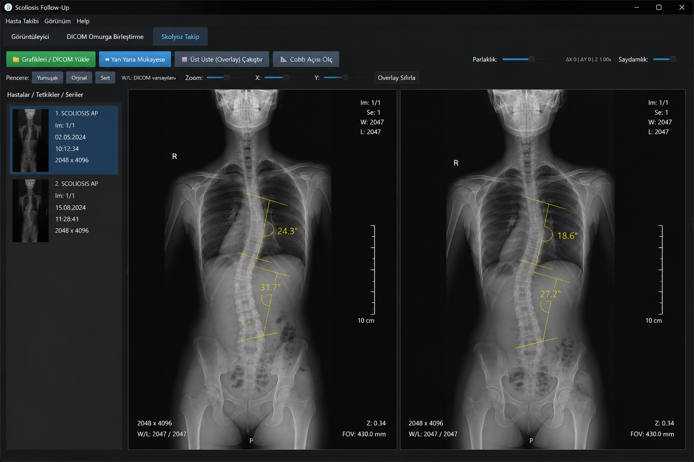
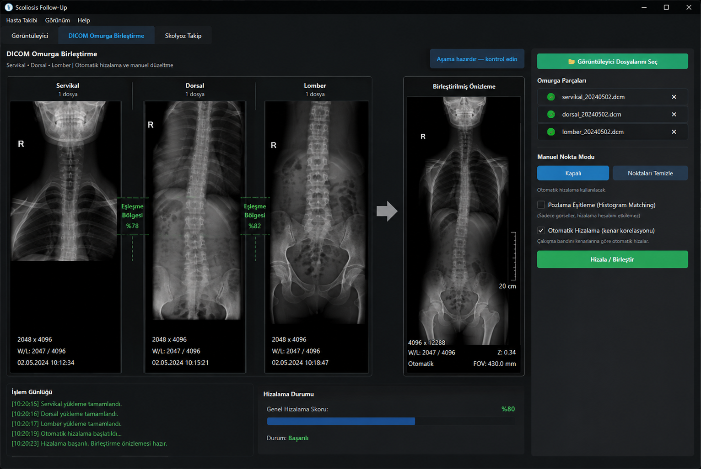

Tek uygulamada kapsamlı çalışma alanı
Görüntüyü açmaktan takip raporuna kadar skolyoz iş akışının farklı aşamalarını ortak bir arayüzde yönetmek üzere tasarlanmıştır.
DICOM Görüntüleyici
DICOM/görüntü açma, görüntüyü sığdırma, zoom, parlaklık ve Window/Level kontrolleri.
Cobb Açısı
Görüntü üzerinde manuel Cobb açısı ölçümü ve takip sürecinde ölçümlerin değerlendirilmesi.
Mesafe Ölçümü
Görüntü üzerinde mesafe ölçüm araçları; geri al/ileri al ve ölçüm temizleme desteği.
Overlay / Mukayese
İki tetkiki yan yana veya üst üste çakıştırarak zaman içindeki değişimi görsel olarak inceleme.
Omurga Birleştirme
Servikal, dorsal ve lomber parçaları otomatik hizalama veya manuel düzeltmeyle tek görüntüye dönüştürme.
Hasta Takibi
Tetkik geçmişi, Cobb geçmişi/trendi, takip özeti, karşılaştırma oturumları, notlar ve takip planlama araçları.
Omur Etiketleri
Görüntü üzerinde vertebra seviyelerini işaretleme ve ilgili notları görüntüleme.
Raporlama
Yetkili kullanıcılar için takip verisini PDF raporu ve CSV çıktısı olarak dışa aktarma.
Yerel Veri & Güvenlik
Yerel veri sağlık kontrolü, lisans yönetimi, güncelleme denetimi, tanı paketi ve hata günlüğü araçları.
Radyografiyi çalışma alanının merkezine alın
Görüntüleyici sekmesi günlük inceleme ve ölçüm işlemlerinin ana çalışma alanıdır.
- DICOM ve desteklenen görüntü dosyalarını açma
- Açılan görüntüleri hasta/tetkik/seri yapısında listeleme
- Zoom ve görüntüyü sığdırma
- Yumuşak, Orijinal ve Sert pencere seçenekleri
- Parlaklık ve Window/Level kontrolü
- Cobb açısı ve mesafe ölçümü
- Geri al / ileri al ve ölçümleri temizleme
- Anotasyon ve işaretleme araçları
- DICOM bilgi görüntüleme
- Döndürme/çevirme gibi görüntü araçları

İki tarihi sadece açmayın; doğrudan karşılaştırın
Takip çalışma alanı, farklı tarihlerde çekilmiş grafilerin değişimini gözle görülür hale getirmek için yan yana mukayese ve overlay yaklaşımını kullanır.
- Hasta / tetkik / seri tabanlı çalışma listesi
- Yan yana mukayese
- Üst üste (Overlay) çakıştırma
- Overlay saydamlık kontrolü
- X/Y konum ve zoom ayarı
- Overlay sıfırlama
- Karşılaştırma üzerinde Cobb ölçümü
- Takip özeti üzerinden iki tetkiki doğrudan Overlay moduna gönderme

Servikal, dorsal ve lomber görüntüleri tek çalışma alanında birleştirin
Uzun omurga görüntüsü oluşturmak için bölgesel görüntüler seçilebilir; sistem otomatik hizalamayı destekler ve gerektiğinde kullanıcıya manuel düzeltme imkânı verir.
- Servikal, dorsal ve lomber parça yükleme
- Görüntüleyici dosya seçicisiyle ortak seçim akışı
- 2 veya 3 parçalı çalışma
- Kenar korelasyonuna dayalı otomatik hizalama
- Manuel nokta modu ve konum düzeltme
- Pozlama eşitleme / histogram matching seçeneği
- Sonucu PNG ve Secondary Capture DICOM olarak kaydetme
- Kaynak PatientID kontrolüyle yanlış hasta geçmişine bağlanmayı önleme
- Uygun sonuçları hasta geçmişi ve ortak DICOM havuzuna ekleme

Takip ve klinik organizasyon araçları
Uygulama yalnızca görüntü açan bir viewer değil; seri takip verisini düzenlemek için ek modüller de içerir.
Tetkik Zaman Çizelgesi
Hastanın kayıtlı tetkiklerini kronolojik olarak incelemeye yönelik yapı.
Cobb Geçmişi & Trend
Kaydedilmiş Cobb ölçümlerini geçmiş ve eğilim açısından takip etmeye yönelik araçlar.
Takip Özeti
Hasta bazlı tetkikleri özetleme, seçili tetkiki açma ve iki tetkiki overlay karşılaştırmasına gönderme.
Karşılaştırma Oturumları
Overlay çalışma ayarlarını ve karşılaştırma oturumlarını hasta takibiyle ilişkilendirme.
Kalite & Takip
Kalite kontrol, takip uyarıları, takip planı ve görüntü notları için ayrı araçlar.
Hasta ve Kullanıcı Yönetimi
Hasta kartı/yönetimi, kullanıcı yönetimi ve işlem geçmişi gibi organizasyon bileşenleri.
Hızlı kullanım rehberi
Temel bir skolyoz takip çalışması birkaç adımda yürütülebilir.
Görüntüleri açın
DICOM veya görüntü dosyalarını Görüntüleyici ya da Skolyoz Takip sekmesinden çalışma alanına ekleyin.
Görüntüyü hazırlayın
Zoom, W/L, parlaklık ve gerekirse görüntü dönüşümlerini kullanarak inceleme görünümünü ayarlayın.
Cobb ölçümünü yapın
Cobb Açısı Ölç aracını kullanarak ilgili son plaklara göre manuel ölçümünüzü oluşturun.
Önceki tetkikle karşılaştırın
İki tarihi seçip Yan Yana veya Overlay moduna geçin; saydamlık ve hizalama kontrolleriyle değişimi inceleyin.
Gerekirse uzun omurga oluşturun
Servikal, dorsal ve lomber görüntüleri Omurga Birleştirme alanına yükleyip otomatik hizalayın; sonucu kontrol ederek kaydedin.
Takip çıktısını oluşturun
Yetkili kullanıcı rolünde hasta takip verisini PDF raporu veya CSV olarak dışa aktarın.
Teknik ve operasyonel özellikler
Windows Masaüstü
PySide6 tabanlı masaüstü arayüz; hasta verileri için yerel uygulama veri alanı.
PACS Entegrasyonu
Uygulama mimarisinde PACS iletişimi için ayrı çalışma modülü bulunur.
Yedekleme & Tanı
Yerel veritabanı sağlık kontrolü, şifreli yedek/geri yükleme altyapısı, tanı paketi ve uygulama günlüğü.
Lisans & Güncelleme
Lisans durum kontrolü, lisans yönetimi ve sürüm/güncelleme denetimi.
Dağıtım Bütünlüğü
Dağıtım bütünlüğü doğrulaması uygulama başlatma mimarisine entegredir.
Deneysel AI
Yerel Cobb önerisi ve eğitim verisi hazırlama bileşenleri bulunur. AI çıktısı taslak niteliğindedir ve manuel doğrulama gerektirir.
İndirme & Güvenlik
En güncel Windows kurulum dosyası GitHub Releases üzerinden otomatik olarak bulunur.
Scoliosis Follow-Up for Windows
Windows için güncel kararlı sürüm: 1.5.1.